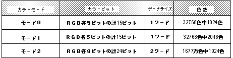

Return to previous page | Return to menu | Go to next page
void
Scroll function
Set color RAM mode
void slColRAMMode(mode)
Uint16 mode ;
mode Uint16 type numerical value corresponding to color RAM mode For mode, substitute the following value defined in “sl_def.h” CRM16_1024: Color RAM mode 0 CRM16_2048: Color RAM mode 1 CRM32_1024: Color RAM mode 2
Determines the color RAM mode.
Be sure to set the color RAM mode before storing color data in the color RAM.
Assign a value corresponding to the color RAM mode to the parameter.
Refer to the table below for details of each color RAM mode.
None
Color RAM mode is set to mode 1 by default.
Each mode is as shown in the table below.
For details on color RAM mode, refer to “HARDWARE MANUAL vol.2” (VDP2 User's Manual: P43).

Note) In mode 0, the color RAM is divided into two and the same color data is stored in each.
Reference: Chapter 8 Scroll
slColRAMMode